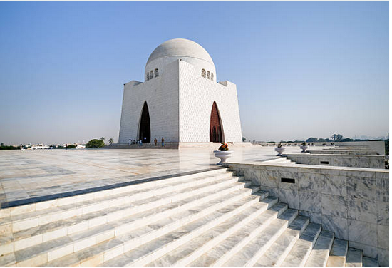

Go Back To Home
Sindh,Pakistan

A Big City:
Karachi, the capital of Sindh province, is a bustling metropolis and the largest city in Pakistan. It is a major economic and cultural hub, known for its vibrant atmosphere, diverse population, and rich history.
About Karachi:
Karachi is located on the coast of the Arabian Sea and is a major port city. It is a melting pot of cultures, with people from all over Pakistan and the world calling it home. The city is known for its delicious cuisine, particularly its seafood and street food. Karachi is also home to numerous historical and cultural landmarks, including the Quaid-e-Azam Mausoleum, the Mohatta Palace Museum, and the Empress Market. Despite facing challenges such as traffic congestion and pollution, Karachi remains a dynamic and vibrant city, full of opportunities and excitement.
Cradle of Civilization:
Sindh has been inhabited for millennia and is considered a cradle of ancient civilizations, including the Indus Valley Civilization.
Indus River:
The Indus River plays a vital role in Sindh's agriculture and economy, providing fertile land for crops like cotton and wheat.
Cultural Diversity:
Sindh is home to diverse ethnic groups, including Sindhis, Mohajirs, and Baloch, each with their unique traditions, languages, and customs.
Thar Desert:
A significant portion of Sindh lies within the Thar Desert, a vast and arid region.
Historical Sites:
Sindh boasts numerous historical sites, including ancient ruins, forts, and tombs.
Historical Places in Sindh:
Here are a few notable historical places in Sindh:
-
Wazir Mansion (Quaid-e-Azam Place):
The birthplace of Pakistan's founder, Muhammad Ali Jinnah.
Ranikot Fort:
A massive ancient fort known as the "Great Wall of Sindh."
-
Mohatta Palace Museum:
A beautiful palace-turned-museum showcasing artifacts and exhibits on Sindh's history and culture.
-
Mazar-e-Quaid-e-Azam:
The mausoleum of Muhammad Ali Jinnah, a significant pilgrimage site for Pakistanis.
-
Kabootar Chowk:
A famous landmark in Karachi, known for its historic significance and bustling atmosphere.